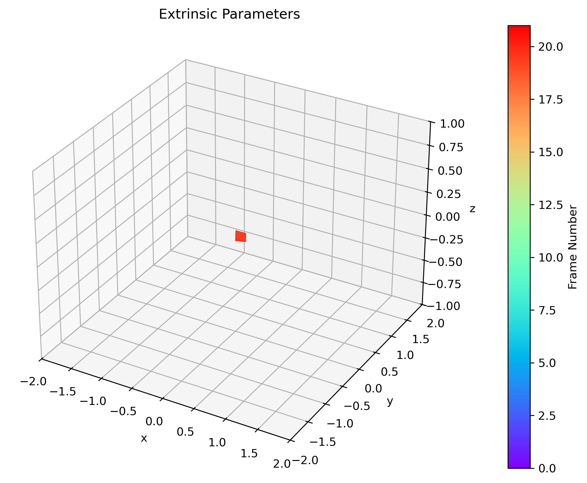
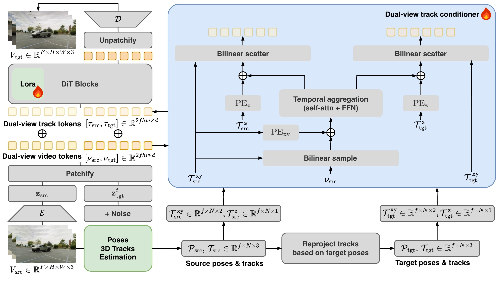
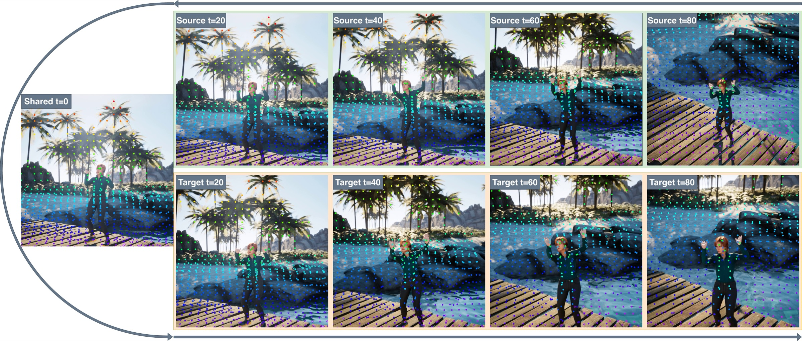

Re-rendering an existing video from a novel camera viewpoint requires the output to follow the prescribed camera trajectory while preserving the appearance and dynamics of the original scene across every frame. Existing methods rely on per-frame pose embeddings, noisy point-cloud renderings, or implicit learned correspondences, none of which provides an explicit, temporally continuous link between source and target pixels. We propose Track2View, which conditions a video diffusion transformer on paired 3D point tracks: sparse trajectories of scene points projected into both the source and target camera views. These tracks provide explicit spatiotemporal correspondences that are temporally continuous by construction, encoding what content should appear where and when. At the core of Track2View is a dual-view track conditioner that transfers visual context from source to target view through parameter-free geometric operations and learned temporal aggregation, ensuring generalization to arbitrary camera trajectories without memorizing specific motions. We further introduce a data curation pipeline that extracts one-to-one track correspondences by running a 3D point tracker on temporally concatenated multi-camera view pairs. On a 400-video benchmark spanning static and dynamic scenes, Track2View achieves state-of-the-art results across visual quality, view synchronization, and camera accuracy, reducing rotation error by 30–65% and translation error by 61–72% relative to leading baselines.
Select a target camera trajectory to see Track2View's re-rendered output. The pose diagram shows the 3D camera path; the video shows the generated result.

Every method re-renders the same source video under the same target camera trajectory. All clips play in sync — click any video to pause or resume them all together.
On the RealCam-Vid benchmark (400 videos: 200 static from RealEstate10K, 200 dynamic from MiraData). Each baseline is matched at its native frame length; Ours highlighted, improvement vs. that baseline in green.
| Method | Frames | Visual Quality | View Sync. | Camera Accuracy | ||||
|---|---|---|---|---|---|---|---|---|
| FID↓ | CLIP-T↑ | CLIP-F↑ | CLIP-V↑ | Mat.Pix.↑ | RotErr°↓ | TransErr↓ | ||
| Trajectory Attention* | 25 | 38.25 | 28.57 | 98.49 | 94.87 | 0.826 | 3.54 | 0.309 |
| Track2View (Ours) | 25 | 33.95 | 29.06 | 99.28 | 95.81 | 1.070 | 1.24−65% | 0.085−72% |
| TrajectoryCrafter* | 49 | 29.34 | 28.87 | 98.70 | 94.70 | 0.737 | 2.12 | 0.721 |
| Track2View (Ours) | 49 | 29.30 | 29.07 | 99.35 | 94.71 | 0.876 | 1.31−38% | 0.280−61% |
| Gen3C | 81 | 30.32 | 28.55 | 99.04 | 92.47 | 0.644 | 4.21 | 3.715 |
| ReCamMaster | 81 | 33.85 | 28.48 | 99.33 | 92.93 | 0.579 | 2.20 | 2.096 |
| Track2View (Ours) | 81 | 26.82 | 28.89 | 99.38 | 93.22 | 0.695 | 1.55−30% | 0.818−61% |
* Camera accuracy evaluated in I2V mode (trajectory relative to the source frame).
Track2View conditions a video diffusion transformer on paired 3D point tracks — sparse scene-point trajectories projected into both the source and target camera views. These tracks give the model an explicit, temporally continuous link between what content appears where and when, replacing the noisy renderings and implicit correspondences used by prior methods.

A 3D point tracker (SpatialTrackerV2) jointly recovers the source camera poses and sparse 3D point tracks from the input video. Given a user-specified target trajectory, the same 3D points are reprojected into the target view — producing one-to-one paired tracks, split into screen-space coordinates (xy) and per-view depth (z).
The core module turns sparse tracks into dense conditioning tokens. It bilinearly samples source video features along each track, aggregates them across time with an 8-layer transformer (filling in frames where a point is occluded), then scatters them back into both views. Every geometric operation is parameter-free, so camera geometry is encoded directly rather than memorized.
The dual-view track tokens are added to the source and noised-target video tokens and fed to a pretrained DiT backbone (WAN-2.1). Only lightweight LoRA adapters and the conditioner are trained — the base video prior stays frozen. The model denoises the target view and decodes it into the final re-rendered video.
Training needs paired videos of the same scene from two viewpoints, with one-to-one track correspondences. We temporally reverse the source camera and concatenate it with the target camera — because both share an identical first frame, this forms a seamless 161-frame clip. Running the tracker once over this sequence yields tracks that span both segments, establishing one-to-one source ↔ target correspondences by construction — no explicit matching, and no learned parameters in the geometry path.

@article{track2view2026,
title = {Track2View: 4D-Consistent Camera-Controlled Video Generation
via Paired 3D Point Tracks},
author = {Feng Qiao and Zhaochong An and Zhexiao Xiong and Serge Belongie and Nathan Jacobs},
journal = {arXiv preprint},
year = {2026}
}